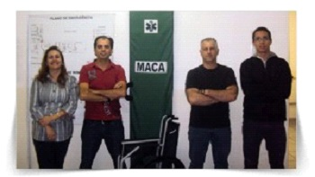

Segunda a NR 5 – a Comissão Interna de Prevenção de Acidentes – CIPA – tem como objetivo a prevenção de acidentes e doenças decorrentes do trabalho, de modo a tornar compatível permanentemente o trabalho com a preservação da vida e a promoção da saúde do trabalhador.
A Etec São Mateus pretende trabalhar (com o auxílio do Curso Técnico em Segurança do Trabalho), os conceitos de Segurança com a comunidade local, atuar de forma preventiva diante de problemas de segurança laboral no ambiente escolar, visando a identificação de riscos para a segurança dos alunos e funcionários, divulgando informações pertinentes ao tema para a comunidade escolar.
Um grupo de trabalho está sendo desenvolvido na unidade para atuar neste quesito, após eleição entre os pares, estabeleceu-se os membros da instituição auxiliar como:
Wladimir Pasquarelli
Wagner Aparecido Pereira
Rita de Cássia Gracetti Martinez
Alisson Ferreira Gonçalves
O CIPA (Comissão Interna de Prevenção de Acidentes) tem como objetivo prevenir e proteger os alunos de possíveis riscos com acidentes dentro da escola, uma equipe foi escolhida e pretende trabalha com auxílio do curso de TST (Técnico de Segurança do Trabalho). Além de identificar possíveis riscos à alunos e funcionários, o CIPA tem a intenção de arrecadar recursos para auxiliar a escola na melhoria do ensino, conservação e manutenção do prédio, máquinas e equipamentos e das instalações técnicas.